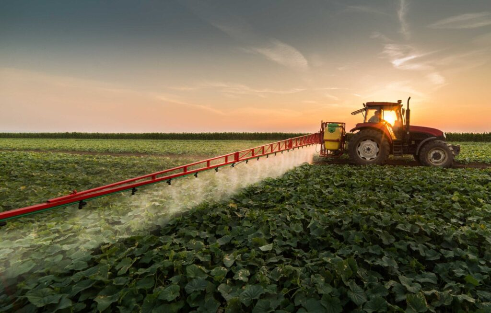
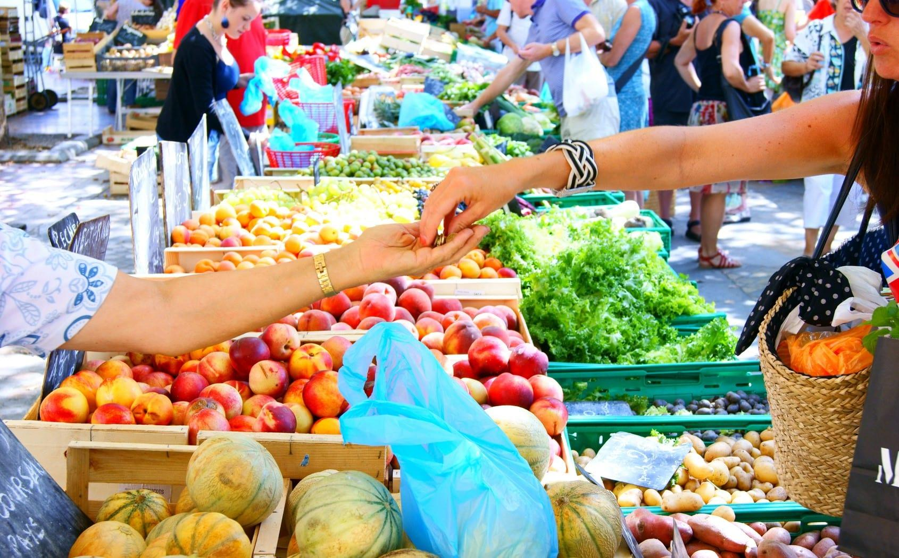
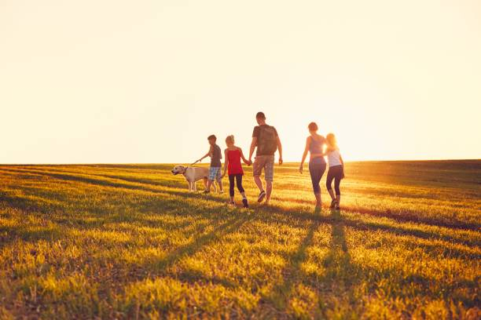

A relação entre o campo e a cidade é essencial para a nossa vida diária. Dos alimentos que comemos à cultura que compartilhamos, essa conexão traz benefícios mútuos e fortalece nossa sociedade.
“A cidade não vive sem o campo e o campo precisa do olhar da cidade.” — Autor Desconhecido
Imagens que Inspiram



“A verdadeira riqueza está na terra e nas mãos que a cultivam.”
— Sabedoria Popular